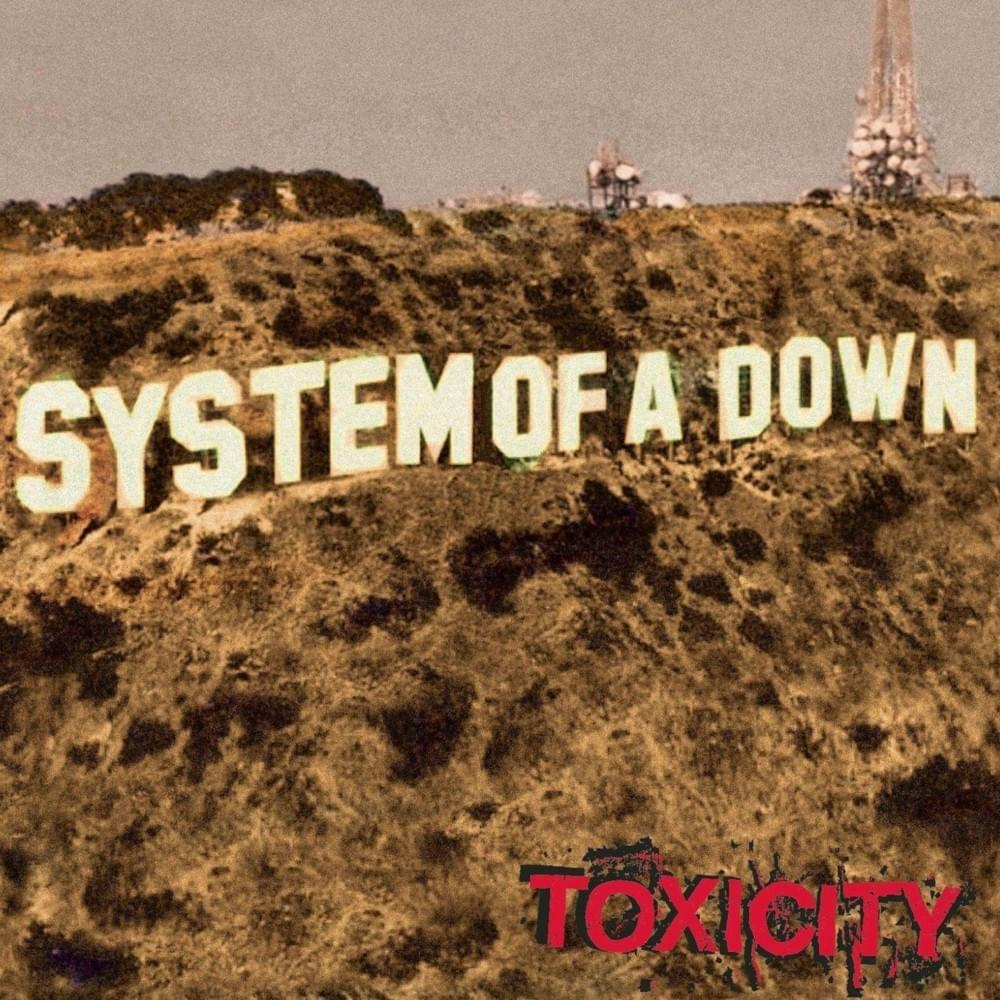
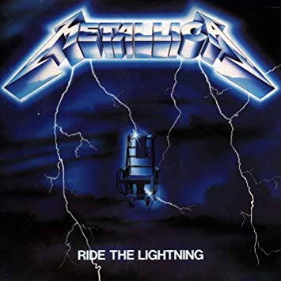

|  | Toxicity is the second studio album by Armenian-American heavy metal band System of a Down, released on September 4, 2001 by American Recordings and Columbia Records. |
|---|
|  | Ride the Lightning is the second studio album by American heavy metal band Metallica, released on July 27, 1984, by the independent record label Megaforce Records. The album was recorded in three weeks with producer Flemming Rasmussen at the Sweet Silence Studios in Copenhagen, Denmark. |
|---|